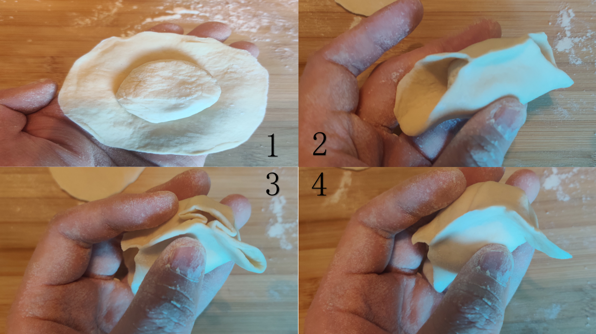
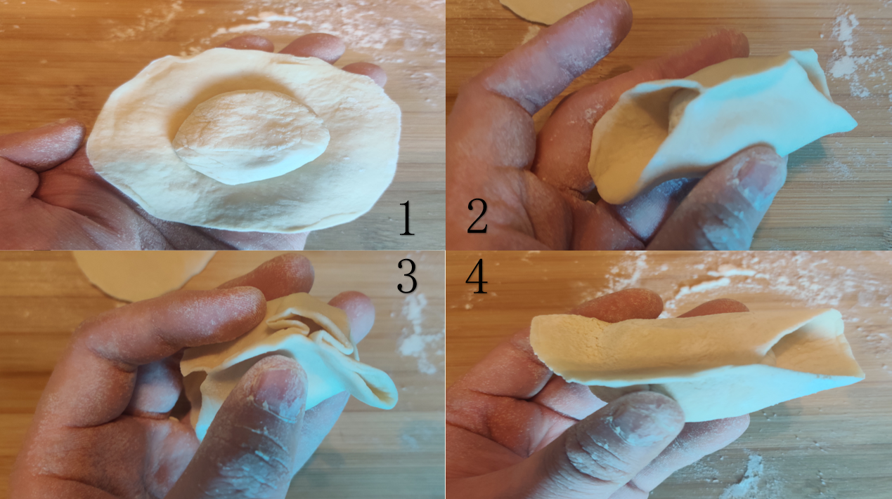
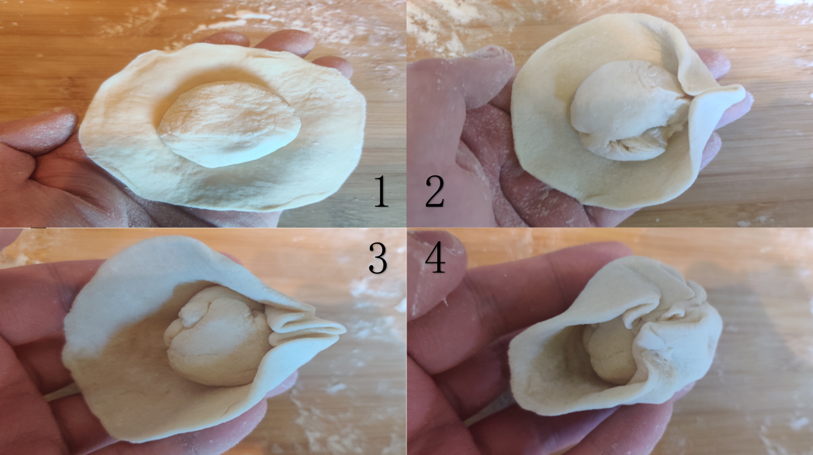
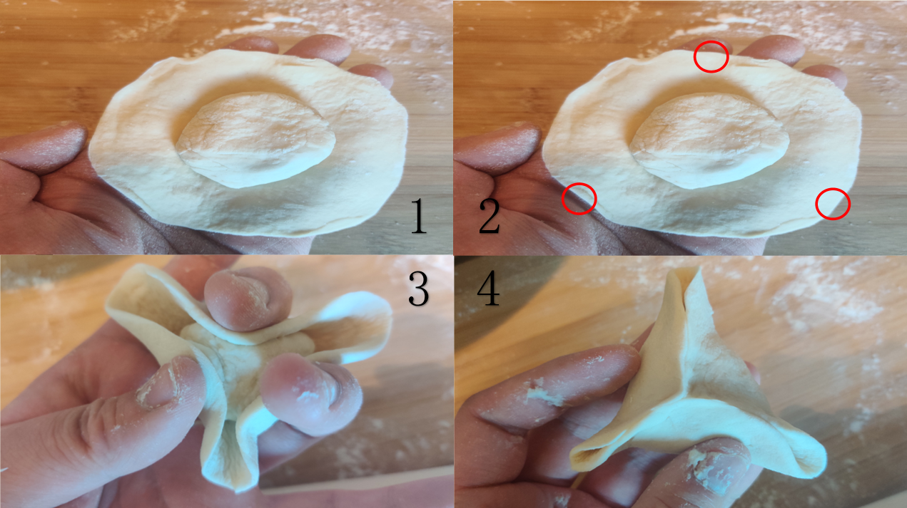

4 methods to fold dumpling
Method 1
- 1.Put the right amount of filling in the middle.
- 2.Fold the dumpling wrappers in half and pinch tightly.
- 3.Fold one end of the dumpling wrapper in the middle and pinch it tightly with the dough wrapper near the palm of your hand.
- 4.Pinch down the protruding dough.
- 5. Same as above on the other side.


Method 2
- 1.Put the right amount of filling in the middle.
- 2.Fold the dumpling wrappers in half and pinch tightly.
- 3.Fold one end of the dumpling wrapper in the middle and pinch it tightly with the dough wrapper near the palm of your hand.
- 4.Pinch down the protruding dough.
- 5. Turn the dumpling fan around and do the same as above.
Method 3
- 1.Put the right amount of filling in the middle.
- 2. Pinch out a piece on any part of the dumpling wrapper.
- 3. Pinch this place, and then squeeze it down with the dough underneath.
- 4. Pinch it up and the upper dough.
- 5. Repeat this action many times.
- 6. Pinch the dough on the tail tightly.


Method 4
- 1.Put the right amount of filling in the middle.
- 2. Put your fingers in three places beside the dough.
- 3. Squeeze evenly in the middle.
- 4. Then squeeze the unsealed areas.